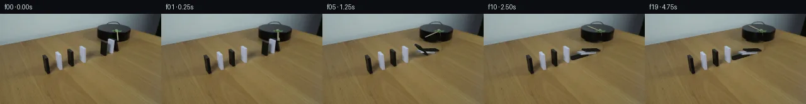

![首帧]()

Round 00
2026-11-05T00:44:05.061011+00:00像素候选变化代码 +375/−0inspection 更新
pixels 8d5a0128b4a5a06a · code 9bbfc03128f07240
查看本轮 generate.py 真实 diff
--- previous/generate.py
+++ current/generate.py
@@ -0,0 +1,375 @@
+"""PixelWorld continuation using local plate edits and analytic cuboid rasterization.
+No image viewing, networks, pretrained models, or external rendering engines.
+"""
+from pathlib import Path
+import json
+import math
+import numpy as np
+import cv2
+from PIL import Image, ImageDraw
+from scipy.ndimage import gaussian_filter, map_coordinates
+import artifact_io
+
+ROOT = Path(__file__).resolve().parent
+W, H, S = 256, 144, 4
+SOURCE = np.asarray(Image.open(ROOT / 'first_frame.png').convert('RGB'))
+assert SOURCE.shape == (H, W, 3)
+RNG = np.random.default_rng(49)
+
+# Measured oblique projection. World distances are in domino heights.
+F = np.array([-24.0, 7.1]) # direction of propagation on the table
+U = np.array([22.0, 9.8]) # lateral direction on the table
+V = np.array([-0.65, -20.5]) # upright height
+PROJECTION = np.stack((F, U, V), axis=1)
+DEPTH = np.cross(PROJECTION[0], PROJECTION[1])
+if DEPTH[2] < 0:
+ DEPTH *= -1
+DEPTH /= np.linalg.norm(DEPTH)
+ORIGIN = np.array([182.9, 58.2])
+GROUND_INV = np.linalg.inv(np.stack((F, U), axis=1))
+
+
+def project(world):
+ return np.asarray(world) @ PROJECTION.T + ORIGIN
+
+
+def polygon_mask(points, dilate=0, blur=0):
+ a = np.zeros((H*S, W*S), np.uint8)
+ cv2.fillPoly(a, [np.rint(np.array(points)*S).astype(np.int32)], 255)
+ a = cv2.resize(a, (W, H), interpolation=cv2.INTER_AREA).astype(np.float32)/255
+ if dilate:
+ k = int(math.ceil(dilate))*2+1
+ a = cv2.dilate(a, np.ones((k,k), np.uint8))
+ if blur:
+ a = gaussian_filter(a, blur)
+ return a
+
+
+# Source object boundaries, including antialiased contour pixels.
+OBJECT_POLYGONS = [
+ [(177,37.3),(181,37.0),(188.0,40.1),(187.7,58.6),
+ (184.9,60.5),(180.2,59.1),(178.0,41.1)],
+ [(173.6,39.1),(180.5,41.0),(182.5,43.0),(181.6,61.3),
+ (179.1,63.6),(173.6,62.3),(170.2,60.0),(170.2,40.7)],
+ [(162.1,42.1),(168.7,44.0),(171.2,47.0),(170.2,65.6),
+ (168.0,67.6),(163.5,66.0),(158.6,63.4),(158.7,44.0)],
+]
+DOMINO_MASKS = [polygon_mask(p, dilate=1, blur=.35) for p in OBJECT_POLYGONS]
+STICK_POLYGON = [(182.8,27.8),(185.9,27.4),(189.0,42.6),(187.9,44.9),(184.8,43.8)]
+STICK_MASK = polygon_mask(STICK_POLYGON, dilate=0, blur=.4)
+ALL_MASK = np.maximum.reduce(DOMINO_MASKS + [STICK_MASK])
+
+# Inpaint locally, then recover the tabletop under the removed objects from
+# clean source strips at the same image rows. Preserve the platform front edge.
+inpaint_mask = (ALL_MASK > .025).astype(np.uint8)*255
+CLEAN = cv2.inpaint(SOURCE, inpaint_mask, 4, cv2.INPAINT_TELEA).astype(np.float32)
+ygrid, xgrid = np.mgrid[:H,:W]
+platform_bottom = 44.5 - .008*(xgrid-181)**2
+left_strip = SOURCE[:, 142:154].astype(np.float32)
+right_strip = SOURCE[:, 192:208].astype(np.float32)
+left_mean = np.median(left_strip, axis=1)
+right_mean = np.median(right_strip, axis=1)
+weight = np.clip((xgrid-148.0)/53.0, 0, 1)
+wood = left_mean[:, None, :]*(1-weight[...,None]) + right_mean[:,None,:]*weight[...,None]
+# Small native grain samples, without bringing in any new image source.
+native = SOURCE[:, 210:242].astype(np.float32)
+texture = native - gaussian_filter(native, (1.0, 4.0, 0))
+wood += texture[:, (np.arange(W)*3+7)%32, :]*.65
+platform_shadow = .20*np.exp(-np.maximum(ygrid-platform_bottom,0)/7.0)
+wood *= (1-platform_shadow[...,None])
+wood_alpha = np.clip((ygrid-platform_bottom-.5)/2.3, 0, 1)*ALL_MASK
+CLEAN = CLEAN*(1-wood_alpha[...,None]) + wood*wood_alpha[...,None]
+# Shaft removal on the platform needs a black surround, not pale inpaint bleed.
+shaft = STICK_MASK*(ygrid>29)*(ygrid<43)
+charcoal = np.stack([11+.03*(ygrid-30),10+.03*(ygrid-30),8+.02*(ygrid-30)], axis=-1)
+CLEAN = CLEAN*(1-shaft[...,None]) + charcoal*shaft[...,None]
+CLEAN = np.clip(CLEAN,0,255)
+
… diff truncated; 288 more lines …